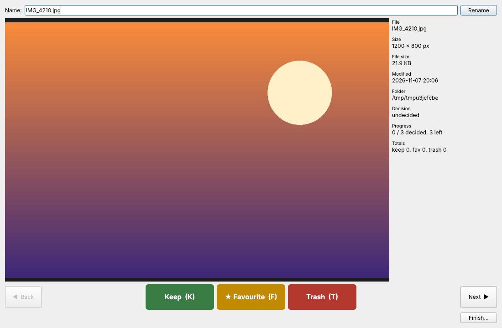
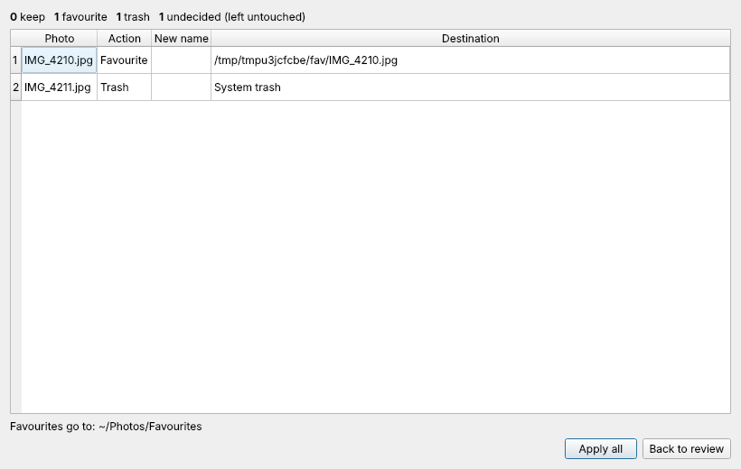

Install & run
pip install -r requirements.txt
python3 main.pyRequires Python 3.10+. Video playback needs the usual system codecs (ffmpeg/gstreamer); the app works without them.
Photo Triage
Sort a whole folder of photos quickly: look at each one, decide, and apply everything as one reviewed batch. Open it from Tools → Photo Triage… (Ctrl+Shift+K).
1. Setup
- Photos folder — where the pictures are.
- Favourites folder — where favourited photos are moved.
- Order — name (natural:
img2beforeimg10), date taken (EXIF, falling back to file modified time) or random; ascending or descending.
2. Review window

- Top — the file name; edit it and press Rename (or Enter). The rename is applied with whatever action you choose, including Keep.
- Centre — the photo; side — info (dimensions, size, date, camera, decision, progress).
- Bottom left / right — Back returns to the previously shown photo (you can change its decision); Next postpones this photo: it goes to the end of the queue and will come back later.
- Bottom centre — Keep (leave where it is), ★ Favourite (move to the favourites folder), Trash (send to the system trash).
3. Summary & apply
When the queue is empty — or when you click Finish… — a summary lists every change. Nothing has touched the disk until you click Apply all. Back to review lets you keep going. Undecided photos are left untouched.

Safety: trash uses the system trash (recoverable) via
send2trash; if it is not installed nothing is deleted and an error is reported.
Name clashes in the favourites folder or on rename get a (1) suffix instead of overwriting.
Photo Triage shortcuts
| Key | Action |
|---|---|
| K | Keep |
| F | Favourite |
| T / Del | Trash |
| → | Next (decide later) |
| ← / Backspace | Back |
Letter shortcuts are disabled while the name field has focus, so typing a new name is safe.
Other tools
- Batch Rename & Edit (Ctrl+B) — rename, convert, resize, adjust many files with undo journal.
- Join Images (Ctrl+J) — horizontal / vertical / grid composites.
- Auto-Stack (Ctrl+Shift+J) — stitch overlapping photos into one large image.
- Viewer: zoom/pan, rotate/flip, crop (incl. perspective), adjustments, undo/redo, slideshow. See the README for the full list.